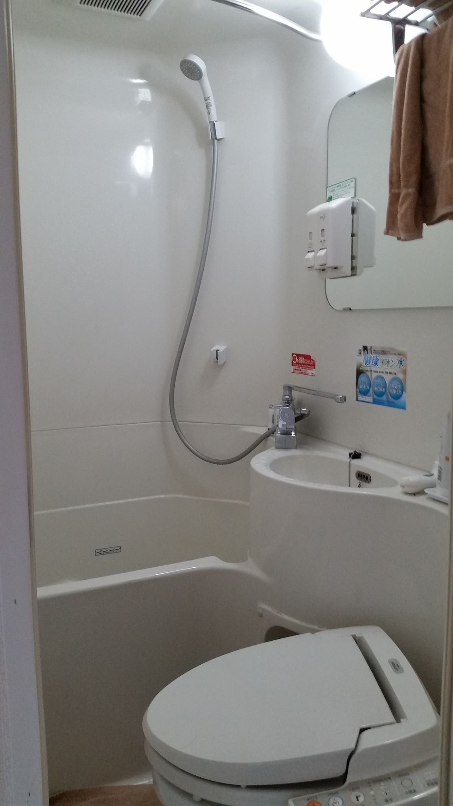
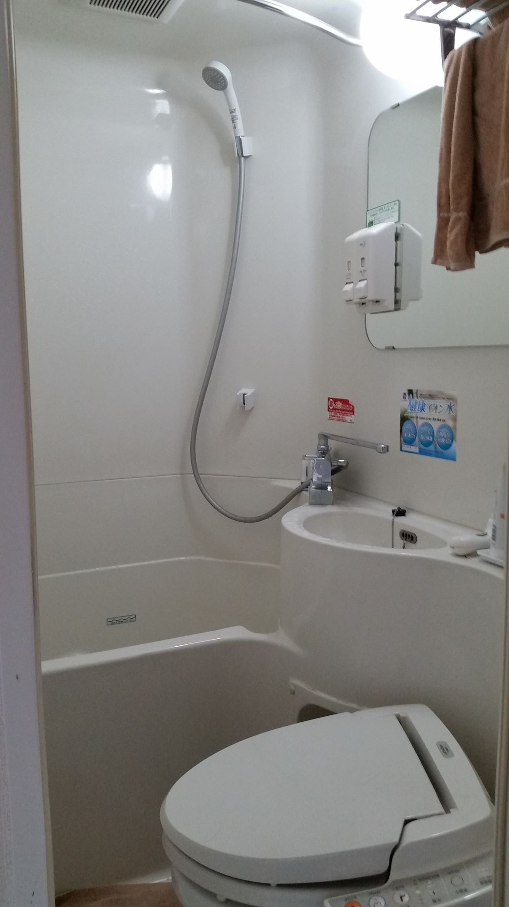

Hotels & Pillows
I first visited Japan in July 2015 with my two cousins. I remember we spent almost a month there. During that humid month in Japan, we tasted lots of delicious foods and stayed at three different hotels. The first hotel was definitely my favorite hotel out of all the hotels we stayed. The staff was professional and friendly. The facility was clean and also offered a variety of pillow choices. There, I found a pillow that relieved my chronic neck pain. I was super happy and excited when I woke up the next morning without any neck pain! I promised myself that I when I returned to America, I would purchase a similar pillow. If you are curious about the pillow I bought, it is a pillow that dips down in the middle and cradles your head while the arch supports your neck. I bought that pillow at Target for $20, and it was the best $20 ever spent! But okay, enough talk about pillows.
Korean Fried Chicken
Let me share a funny story. During our last week in Japan, we had decided to stay in Korea Town. My cousins and I were big fans of korean pop, or KPOP for short, at the time, so of course we had to stay in K-Town! Since we were already sucked into the world of KPOP, we might as well enjoy K-dramas. And man, in those K-dramas, do the people love to eat! The dramas almost always include scenes where the cast is happily stuffing their faces with delicious food. This is how we stumbled into the wonderful world of Korean food. Some examples include Korean fried chicken and barbeque, jjajangmyeon, kimchi, ramyeon, tteokbokki, soondubu jjigae, bibimbap, soju, and makgeolli. If you are wondering how is Korean fried chicken different from American fried chicken, let me tell you, they are not the same! For more details, please refer to Strictly Dumpling's YouTube video on Korean fried chicken. Mike Chen's KFC Video. But, okay, time to get back to my funny story. It has to do with Korean fried chicken (KFC). We had been craving KFC, so being fatties as we were, we decided to eat KFC two days in a row! But, the funny story happened on the first day. Like most Asian countries, the locals do not speak fluent English. Surprise! You can imagine it was a little bit of a struggle to order food. Most of the time, we would point to the pictures of the food we wanted. At the KFC restaurant we visited, the staff understood a little bit of English. I eagerly ordered my food and said, "We would like to order two of these large chicken meals." I got a confused look from the guy at the counter, so I repeated my order and the word "large" while making a big circle with my hands a few times. The guy still didn't seem to understand. At a loss, I finally decided to try the word "big," and bingo! That did the trick! He didn't know that large was a synonym for big. All this time, my cousin standing on the side was secretly laughing with her hand covering her mouth while watching me struggling to order our food. And guess what, she actually knew some basic Japanese, so she could've easily ordered for me! But, hey, that's what family is for, right? But, the following day, we visited the same chicken restaurant and ordered take out. The same guy from yesterday packed our food and gave us free soda!
Culture Shock
Now, I definitely have to talk about the culture shock I experienced in Japan. First off, the Japanese people are very nice and courteous. They are almost always bowing down, smiling, and saying greetings. They even taught the deer to bow! But, that's a story for later. There are greetings for every time of day and when you eat meals. When I returned to America, it was a shock because people were so rude! Secondly, oh my god, their convenience stores! I love them so much! They have a wide selection of foods and everything was so convenient, for a lack of a better word. But, the sweets and selection of drinks was amazing. The sweets in Japan are not like the ones in America, where they are diabeticly sweet. The Japanese sweets include just the right amount of sugar where it's subtle and not overpowering the other flavors of the dessert. Third, the transportation system. I swear Japan has the most efficient transportation system! Everything is punctual, and in the rare chance that the train or bus is late, the staff will provide you with paper notes to show to your boss that you were late because of the train or bus so that you won't get in trouble. How cool is that? Fourth, their hotel bathrooms. It isn't as spacious as the American ones. Japan is an immensely populated country, and to make the most out of their space, they came up with creative ways to organize their living space. The bathrooms have the sink, toilet, and shower tub all in one room. Everything is small but efficient. The toilets were quite high tech; it offered options such as heated seats, cleaning and blow drying your bottom, and making sounds so that when you go, other people can't hear you. I would say the Japanese people are very considerate and oriented to details. While we're talking about being considerate, the Japanese are even considerate about the way they receive and handle their yen (¥), that's what they call their currency. When you pay at a store or restaurant in Japan, they will ask you to place the money on a tray and then push the tray back to them. They won't take the money directly from your hands. They also refuse tips in restaurants.
 

Food Porn
When you travel, you most definitely should take pictures of the food you eat! So, this section is dedicated to some of the food that I ate in Japan.